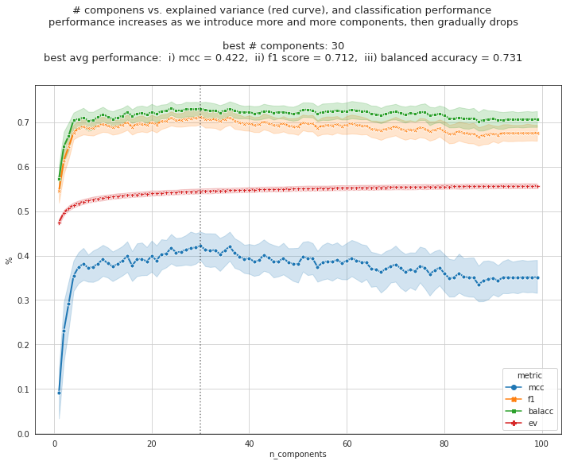
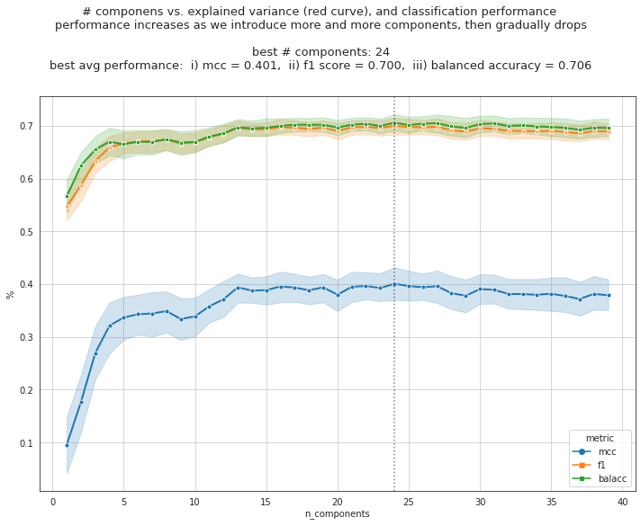
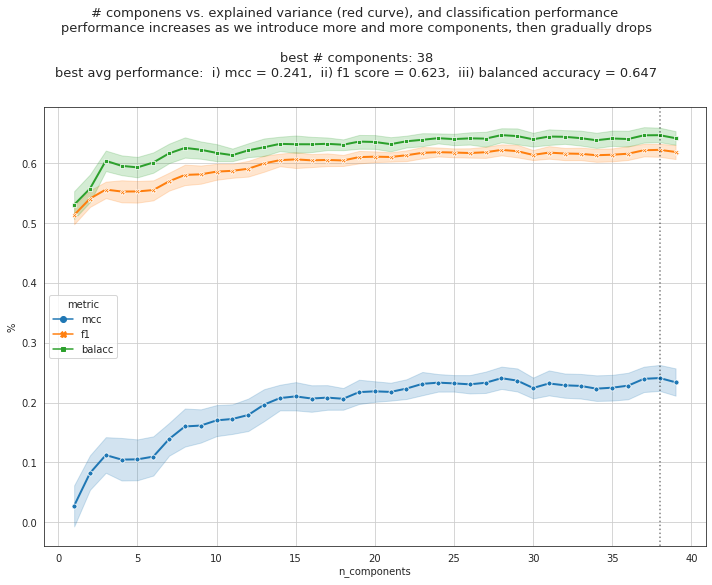

January, 11th 2020¶
Motivation: Combining datasets using CanonicalCorrelation Analysis (CCA). Can we find latent dimensions using CCA that is shared between different datasets, and then map data from neuron space to this shared latent space?
Result: Not yet clear, some preliminary results show that this is possible. However, thorough analysis is needed to understand this shared space. It still doesn’t work convincingly.
# HIDE CODE
# imports
import os
import sys
import h5py
import pickle
import random
import numpy as np
import pandas as pd
from os.path import join as pjoin
from copy import deepcopy as dc
from tqdm.notebook import tqdm
from collections import Counter
import matplotlib.pyplot as plt
import seaborn as sns
sns.set_style('white')
github_path = pjoin(os.environ['HOME'], 'Dropbox/git/A1ToneDiscrimination/')
sys.path.insert(0, github_path)
from utils.process import *
from utils.generic_utils import *
from utils.plot_functions import *
import warnings
warnings.filterwarnings('ignore', category=RuntimeWarning)
import rcca
from sklearn.linear_model import LogisticRegression
from sklearn.metrics import balanced_accuracy_score, matthews_corrcoef, f1_score
# load data
dirs_dict = get_dirs()
CCA analysis¶
TODO
from typing import Tuple, Union
def _load_target_nontarget(h_load_file: str):
target_dffs, nontarget_dffs = {}, {}
target_labels, nontarget_labels = {}, {}
f = h5py.File(h_load_file, 'r')
for name in f:
behavior = f[name]['behavior']
passive = f[name]['passive']
good_cells_b = np.array(behavior["good_cells"], dtype=int)
good_cells_p = np.array(passive["good_cells"], dtype=int)
good_cells = set(good_cells_b).intersection(set(good_cells_p))
good_cells = sorted(list(good_cells))
dff = np.array(behavior['dff'], dtype=float)[..., good_cells]
nt, ntrials, nc = dff.shape
trial_info = {}
for k, v in behavior["trial_info"].items():
trial_info[k] = np.array(v, dtype=int)
target_indxs = np.where(trial_info['target'])[0]
nontarget_indxs = np.where(trial_info['nontarget'])[0]
target_dffs[name] = dff[:, target_indxs, :]
nontarget_dffs[name] = dff[:, nontarget_indxs, :]
target_labels[name] = trial_info['hit'][target_indxs]
nontarget_labels[name] = trial_info['correctreject'][nontarget_indxs]
f.close()
raw_data = {
'target_dffs': target_dffs,
'nontarget_dffs': nontarget_dffs,
'target_labels': target_labels,
'nontarget_labels': nontarget_labels,
}
return raw_data
def augment_data(
x: np.ndarray,
y: np.ndarray,
nb_end_samples: int,
sigma: float = 1.0,
rng: np.random.RandomState = None,):
nb_samples, nb_features = x.shape
if nb_end_samples - nb_samples <= 0:
output = {
'x_aug': x[:nb_end_samples],
'y_aug': y[:nb_end_samples],
'noise': None,
'indxs': None,
}
return output
else:
nb_repeats, nb_extra_samples = nb_end_samples//nb_samples, nb_end_samples%nb_samples
indxs = np.arange(nb_samples)
x_aug, y_aug = tuple(map(dc, [x, y]))
for _ in range(1, nb_repeats):
indxs = np.concatenate([indxs, np.arange(nb_samples)])
x_aug = np.concatenate([x_aug, x])
y_aug = np.concatenate([y_aug, y])
rng = np.random.RandomState(42) if rng is None else rng
if nb_extra_samples > 0:
extra_indxs = rng.choice(range(nb_samples), size=nb_extra_samples, replace=True)
indxs = np.concatenate([indxs, extra_indxs])
x_aug = np.concatenate([x_aug, x[extra_indxs]])
y_aug = np.concatenate([y_aug, y[extra_indxs]])
noise = np.random.randn(*x_aug.shape) * x.std(0) * sigma
noise[:nb_samples] = 0.0
augmented = {
'x_aug': x_aug + noise,
'y_aug': y_aug,
'noise': noise,
'indxs': indxs,
}
return augmented
def prepare_data(
h_load_file: str,
timepoint: int = 45,
nb_min_samples: int = -1,
nb_end_samples: int = None,
augment: bool = False,
sigma: float = 0.0,
xv_folds: int = 10,
random_state: int = 42,):
raw_data = _load_target_nontarget(h_load_file)
rng = np.random.RandomState(random_state)
train_data, test_data = {}, {}
train_labels, test_labels = {}, {}
for key, val in raw_data['target_dffs'].items():
x = val[timepoint]
num_samples = len(x)
if num_samples < nb_min_samples:
continue
labels = raw_data['target_labels'][key]
if not augment:
x = x[:nb_min_samples]
labels = labels[:nb_min_samples]
### TODDO: floor or ceil?
pos_indxs = np.where(labels == 0)[0]
neg_indxs = np.where(labels == 1)[0]
pos_tst_indxs = rng.choice(pos_indxs, size=int(np.ceil(len(pos_indxs)/xv_folds)), replace=False)
neg_tst_indxs = rng.choice(neg_indxs, size=int(np.ceil(len(neg_indxs)/xv_folds)), replace=False)
tst_indxs = np.concatenate([pos_tst_indxs, neg_tst_indxs])
trn_indxs = np.delete(range(len(labels)), tst_indxs)
assert not set(tst_indxs).intersection(set(trn_indxs))
test_data[key] = x[tst_indxs]
train_data[key] = x[trn_indxs]
test_labels[key] = labels[tst_indxs]
train_labels[key] = labels[trn_indxs]
aug_train_data = {}
aug_train_labels = {}
if augment:
for key, x in train_data.items():
y = train_labels[key]
augmented = augment_data(
x=x,
y=y,
nb_end_samples=nb_end_samples,
sigma=sigma,
rng=rng,
)
aug_train_data[key] = augmented['x_aug']
aug_train_labels[key] = augmented['y_aug']
output = {
'aug_train_data': aug_train_data,
'aug_train_labels': aug_train_labels,
'train_data': train_data,
'train_labels': train_labels,
'test_data': test_data,
'test_labels': test_labels,
}
return output
import rcca
from sklearn.linear_model import LogisticRegression
from sklearn.metrics import balanced_accuracy_score, matthews_corrcoef, f1_score
import random
from tqdm.notebook import tqdm
max_components = 100
seeds = [np.power(2, i) for i in range(30)]
seeds += [42]
results = pd.DataFrame()
for seed in tqdm(seeds):
random.seed(seed)
np.random.seed(seed)
output = prepare_data(
h_load_file=dirs_dict['h_load_file'],
timepoint=45,
augment=False,
nb_min_samples=100,
random_state=seed,
)
train_data = output['train_data']
train_labels = output['train_labels']
test_data = output['test_data']
test_labels = output['test_labels']
for n_components in tqdm(range(1, max_components), leave=False):
cca = rcca.CCA(reg=1., numCC=n_components, verbose=False)
cca.train(list(train_data.values()))
ev = cca.compute_ev(list(test_data.values()))
x_trn = [x @ w for x, w in zip(train_data.values(), cca.ws)]
x_tst = [x @ w for x, w in zip(test_data.values(), cca.ws)]
y_trn = [item for item in train_labels.values()]
y_tst = [item for item in test_labels.values()]
x_trn, x_tst, y_trn, y_tst = tuple(map(np.concatenate, [x_trn, x_tst, y_trn, y_tst]))
clf = LogisticRegression(
random_state=seed,
penalty='l1',
C=1.,
solver='liblinear',
class_weight='balanced',
max_iter=int(1e6),
).fit(x_trn, y_trn)
y_pred = clf.predict(x_tst)
balacc = balanced_accuracy_score(y_tst, y_pred)
f1 = f1_score(y_tst, y_pred)
mcc = matthews_corrcoef(y_tst, y_pred)
data_dict = {
'seed': [seed] * 4,
'sigma': [np.nan] * 4,
'n_components': [n_components] * 4,
'metric': ['mcc', 'f1', 'balacc', 'ev'],
'value': [mcc, balacc, f1, np.mean([item.max(0).mean() for item in ev])],
}
results = pd.concat([results, pd.DataFrame.from_dict(data_dict)])
results = reset_df(results)
plt.figure(figsize=(10, 8))
sns.lineplot(data=results, x='n_components', y='value', hue='metric',
style='metric', markers=True, dashes=False, lw=2, markersize=5)
plt.ylabel('%')
plt.grid()
selected_df = results.loc[results.metric == 'mcc']
performance = selected_df.groupby('n_components').mean()
best_n_components = performance.iloc[performance.value.argmax()].name
selected_df = selected_df.loc[selected_df.n_components == best_n_components]
plt.axvline(best_n_components, ls=':', color='k', alpha=0.5)
msg = '# componens vs. explained variance (red curve), and classification performance \n'
msg += 'performance increases as we introduce more and more components, then gradually drops\n\n'
msg += 'best # components: {:d}\n'
msg += 'best avg performance: i) mcc = {:.3f}, ii) f1 score = {:.3f}, iii) balanced accuracy = {:.3f}'
avg_mcc = results.loc[(results.metric == 'mcc') & (results.n_components == best_n_components)].value.mean()
avg_f1 = results.loc[(results.metric == 'f1') & (results.n_components == best_n_components)].value.mean()
avg_balacc = results.loc[(results.metric == 'balacc') & (results.n_components == best_n_components)].value.mean()
msg = msg.format(best_n_components, avg_mcc, avg_f1, avg_balacc)
plt.suptitle(msg, fontsize=13, y=1.01)
plt.tight_layout()
plt.show()

selected_df
| seed | sigma | n_components | metric | value | |
|---|---|---|---|---|---|
| 116 | 1 | NaN | 30 | mcc | 0.382679 |
| 512 | 2 | NaN | 30 | mcc | 0.478061 |
| 908 | 4 | NaN | 30 | mcc | 0.488662 |
| 1304 | 8 | NaN | 30 | mcc | 0.368924 |
| 1700 | 16 | NaN | 30 | mcc | 0.382679 |
| 2096 | 32 | NaN | 30 | mcc | 0.392532 |
| 2492 | 64 | NaN | 30 | mcc | 0.482527 |
| 2888 | 128 | NaN | 30 | mcc | 0.448464 |
| 3284 | 256 | NaN | 30 | mcc | 0.309343 |
| 3680 | 512 | NaN | 30 | mcc | 0.341797 |
| 4076 | 1024 | NaN | 30 | mcc | 0.404570 |
| 4472 | 2048 | NaN | 30 | mcc | 0.644021 |
| 4868 | 4096 | NaN | 30 | mcc | 0.497349 |
| 5264 | 8192 | NaN | 30 | mcc | 0.488662 |
| 5660 | 16384 | NaN | 30 | mcc | 0.522093 |
| 6056 | 32768 | NaN | 30 | mcc | 0.435077 |
| 6452 | 65536 | NaN | 30 | mcc | 0.465965 |
| 6848 | 131072 | NaN | 30 | mcc | 0.204007 |
| 7244 | 262144 | NaN | 30 | mcc | 0.374836 |
| 7640 | 524288 | NaN | 30 | mcc | 0.404570 |
| 8036 | 1048576 | NaN | 30 | mcc | 0.552419 |
| 8432 | 2097152 | NaN | 30 | mcc | 0.522093 |
| 8828 | 4194304 | NaN | 30 | mcc | 0.350678 |
| 9224 | 8388608 | NaN | 30 | mcc | 0.334677 |
| 9620 | 16777216 | NaN | 30 | mcc | 0.392532 |
| 10016 | 33554432 | NaN | 30 | mcc | 0.539398 |
| 10412 | 67108864 | NaN | 30 | mcc | 0.301207 |
| 10808 | 134217728 | NaN | 30 | mcc | 0.341797 |
| 11204 | 268435456 | NaN | 30 | mcc | 0.254441 |
| 11600 | 536870912 | NaN | 30 | mcc | 0.465965 |
| 11996 | 42 | NaN | 30 | mcc | 0.522093 |
now aug¶
max_components = 40
seeds = [np.power(2, i) for i in range(30)]
seeds += [42]
results = pd.DataFrame()
for seed in tqdm(seeds):
random.seed(seed)
np.random.seed(seed)
output = prepare_data(
h_load_file=dirs_dict['h_load_file'],
timepoint=45,
augment=True,
sigma=0.3,
nb_end_samples=130,
nb_min_samples=100,
random_state=seed,
)
aug_train_data = output['aug_train_data']
# aug_train_labels = output['aug_train_labels']
train_data = output['train_data']
train_labels = output['train_labels']
test_data = output['test_data']
test_labels = output['test_labels']
for n_components in tqdm(range(1, max_components), leave=False):
cca = rcca.CCA(reg=1., numCC=n_components, verbose=False)
cca.train(list(aug_train_data.values()))
# ev = cca.compute_ev(list(test_data.values()))
x_trn = [x @ w for x, w in zip(train_data.values(), cca.ws)]
x_tst = [x @ w for x, w in zip(test_data.values(), cca.ws)]
y_trn = [item for item in train_labels.values()]
y_tst = [item for item in test_labels.values()]
x_trn, x_tst, y_trn, y_tst = tuple(map(np.concatenate, [x_trn, x_tst, y_trn, y_tst]))
clf = LogisticRegression(
random_state=seed,
penalty='l1',
C=1.,
solver='liblinear',
class_weight='balanced',
max_iter=int(1e6),
).fit(x_trn, y_trn)
y_pred = clf.predict(x_tst)
balacc = balanced_accuracy_score(y_tst, y_pred)
f1 = f1_score(y_tst, y_pred)
mcc = matthews_corrcoef(y_tst, y_pred)
data_dict = {
'seed': [seed] * 3,
'sigma': [np.nan] * 3,
'n_components': [n_components] * 3,
'metric': ['mcc', 'f1', 'balacc'],
'value': [mcc, balacc, f1],
}
results = pd.concat([results, pd.DataFrame.from_dict(data_dict)])
results = reset_df(results)
plt.figure(figsize=(10, 8))
sns.lineplot(data=results, x='n_components', y='value', hue='metric',
style='metric', markers=True, dashes=False, lw=2, markersize=5)
plt.ylabel('%')
plt.grid()
selected_df = results.loc[results.metric == 'mcc']
performance = selected_df.groupby('n_components').mean()
best_n_components = performance.iloc[performance.value.argmax()].name
selected_df = selected_df.loc[selected_df.n_components == best_n_components]
plt.axvline(best_n_components, ls=':', color='k', alpha=0.5)
msg = '# componens vs. explained variance (red curve), and classification performance \n'
msg += 'performance increases as we introduce more and more components, then gradually drops\n\n'
msg += 'best # components: {:d}\n'
msg += 'best avg performance: i) mcc = {:.3f}, ii) f1 score = {:.3f}, iii) balanced accuracy = {:.3f}'
avg_mcc = results.loc[(results.metric == 'mcc') & (results.n_components == best_n_components)].value.mean()
avg_f1 = results.loc[(results.metric == 'f1') & (results.n_components == best_n_components)].value.mean()
avg_balacc = results.loc[(results.metric == 'balacc') & (results.n_components == best_n_components)].value.mean()
msg = msg.format(best_n_components, avg_mcc, avg_f1, avg_balacc)
plt.suptitle(msg, fontsize=13, y=1.01)
plt.tight_layout()
plt.show()

selected_df
| seed | sigma | n_components | metric | value | |
|---|---|---|---|---|---|
| 69 | 1 | NaN | 24 | mcc | 0.288944 |
| 186 | 2 | NaN | 24 | mcc | 0.432512 |
| 303 | 4 | NaN | 24 | mcc | 0.513300 |
| 420 | 8 | NaN | 24 | mcc | 0.269125 |
| 537 | 16 | NaN | 24 | mcc | 0.316980 |
| 654 | 32 | NaN | 24 | mcc | 0.465849 |
| 771 | 64 | NaN | 24 | mcc | 0.379787 |
| 888 | 128 | NaN | 24 | mcc | 0.470824 |
| 1005 | 256 | NaN | 24 | mcc | 0.459796 |
| 1122 | 512 | NaN | 24 | mcc | 0.396239 |
| 1239 | 1024 | NaN | 24 | mcc | 0.603442 |
| 1356 | 2048 | NaN | 24 | mcc | 0.442594 |
| 1473 | 4096 | NaN | 24 | mcc | 0.248285 |
| 1590 | 8192 | NaN | 24 | mcc | 0.373899 |
| 1707 | 16384 | NaN | 24 | mcc | 0.316980 |
| 1824 | 32768 | NaN | 24 | mcc | 0.465849 |
| 1941 | 65536 | NaN | 24 | mcc | 0.485517 |
| 2058 | 131072 | NaN | 24 | mcc | 0.324138 |
| 2175 | 262144 | NaN | 24 | mcc | 0.423136 |
| 2292 | 524288 | NaN | 24 | mcc | 0.470824 |
| 2409 | 1048576 | NaN | 24 | mcc | 0.436706 |
| 2526 | 2097152 | NaN | 24 | mcc | 0.459796 |
| 2643 | 4194304 | NaN | 24 | mcc | 0.505401 |
| 2760 | 8388608 | NaN | 24 | mcc | 0.359864 |
| 2877 | 16777216 | NaN | 24 | mcc | 0.202610 |
| 2994 | 33554432 | NaN | 24 | mcc | 0.316980 |
| 3111 | 67108864 | NaN | 24 | mcc | 0.261084 |
| 3228 | 134217728 | NaN | 24 | mcc | 0.432512 |
| 3345 | 268435456 | NaN | 24 | mcc | 0.369458 |
| 3462 | 536870912 | NaN | 24 | mcc | 0.436706 |
| 3579 | 42 | NaN | 24 | mcc | 0.495567 |
more aug¶
max_components = 40
seeds = [np.power(2, i) for i in range(30)]
seeds += [42]
results = pd.DataFrame()
for seed in tqdm(seeds):
random.seed(seed)
np.random.seed(seed)
output = prepare_data(
h_load_file=dirs_dict['h_load_file'],
timepoint=45,
augment=True,
sigma=0.3,
nb_end_samples=300,
nb_min_samples=100,
random_state=seed,
)
aug_train_data = output['aug_train_data']
# aug_train_labels = output['aug_train_labels']
train_data = output['train_data']
train_labels = output['train_labels']
test_data = output['test_data']
test_labels = output['test_labels']
for n_components in tqdm(range(1, max_components), leave=False):
cca = rcca.CCA(reg=1., numCC=n_components, verbose=False)
cca.train(list(aug_train_data.values()))
ev = cca.compute_ev(list(test_data.values()))
x_trn = [x @ w for x, w in zip(train_data.values(), cca.ws)]
x_tst = [x @ w for x, w in zip(test_data.values(), cca.ws)]
y_trn = [item for item in train_labels.values()]
y_tst = [item for item in test_labels.values()]
x_trn, x_tst, y_trn, y_tst = tuple(map(np.concatenate, [x_trn, x_tst, y_trn, y_tst]))
clf = LogisticRegression(
random_state=seed,
penalty='l1',
C=1.,
solver='liblinear',
class_weight='balanced',
max_iter=int(1e6),
).fit(x_trn, y_trn)
y_pred = clf.predict(x_tst)
balacc = balanced_accuracy_score(y_tst, y_pred)
f1 = f1_score(y_tst, y_pred)
mcc = matthews_corrcoef(y_tst, y_pred)
data_dict = {
'seed': [seed] * 4,
'sigma': [np.nan] * 4,
'n_components': [n_components] * 4,
'metric': ['mcc', 'f1', 'balacc', 'ev'],
'value': [mcc, balacc, f1, np.mean([item.max(0).mean() for item in ev])],
}
results = pd.concat([results, pd.DataFrame.from_dict(data_dict)])
results = reset_df(results)
/usr/local/lib/python3.8/dist-packages/rcca/__init__.py:249: VisibleDeprecationWarning: Creating an ndarray from ragged nested sequences (which is a list-or-tuple of lists-or-tuples-or ndarrays with different lengths or shapes) is deprecated. If you meant to do this, you must specify 'dtype=object' when creating the ndarray
ccomp = np.array(ccomp)
---------------------------------------------------------------------------
ValueError Traceback (most recent call last)
<ipython-input-10-c7c80ae91e0f> in <module>
28 cca = rcca.CCA(reg=1., numCC=n_components, verbose=False)
29 cca.train(list(aug_train_data.values()))
---> 30 ev = cca.compute_ev(list(test_data.values()))
31
32 x_trn = [x @ w for x, w in zip(train_data.values(), cca.ws)]
/usr/local/lib/python3.8/dist-packages/rcca/__init__.py in compute_ev(self, vdata)
61 if self.verbose:
62 print('Computing explained variance for component #%d' % ccs)
---> 63 preds, corrs = predict(vdata, [w[:, ccs-1:ccs] for w in self.ws],
64 self.cutoff)
65 resids = [abs(d[0]-d[1]) for d in zip(vdata, preds)]
/usr/local/lib/python3.8/dist-packages/rcca/__init__.py in predict(vdata, ws, cutoff)
254 idx = np.ones((len(vdata),))
255 idx[dnum] = False
--> 256 proj = ccomp[idx > 0].mean(0)
257 pred = np.dot(iws[dnum], proj.T).T
258 pred = np.nan_to_num(_zscore(pred))
~/.local/lib/python3.8/site-packages/numpy/core/_methods.py in _mean(a, axis, dtype, out, keepdims)
158 is_float16_result = True
159
--> 160 ret = umr_sum(arr, axis, dtype, out, keepdims)
161 if isinstance(ret, mu.ndarray):
162 ret = um.true_divide(
ValueError: operands could not be broadcast together with shapes (13,1) (14,1)
plt.figure(figsize=(10, 8))
sns.lineplot(data=results, x='n_components', y='value', hue='metric',
style='metric', markers=True, dashes=False, lw=2, markersize=5)
plt.ylabel('%')
plt.grid()
selected_df = results.loc[results.metric == 'mcc']
performance = selected_df.groupby('n_components').mean()
best_n_components = performance.iloc[performance.value.argmax()].name
selected_df = selected_df.loc[selected_df.n_components == best_n_components]
plt.axvline(best_n_components, ls=':', color='k', alpha=0.5)
msg = '# componens vs. explained variance (red curve), and classification performance \n'
msg += 'performance increases as we introduce more and more components, then gradually drops\n\n'
msg += 'best # components: {:d}\n'
msg += 'best avg performance: i) mcc = {:.3f}, ii) f1 score = {:.3f}, iii) balanced accuracy = {:.3f}'
avg_mcc = results.loc[(results.metric == 'mcc') & (results.n_components == best_n_components)].value.mean()
avg_f1 = results.loc[(results.metric == 'f1') & (results.n_components == best_n_components)].value.mean()
avg_balacc = results.loc[(results.metric == 'balacc') & (results.n_components == best_n_components)].value.mean()
msg = msg.format(best_n_components, avg_mcc, avg_f1, avg_balacc)
plt.suptitle(msg, fontsize=13, y=1.01)
plt.tight_layout()
plt.show()
selected_df
more aug / all data¶
max_components = 40
seeds = [np.power(2, i) for i in range(20)]
seeds += [42]
results = pd.DataFrame()
for seed in tqdm(seeds):
random.seed(seed)
np.random.seed(seed)
output = prepare_data(
h_load_file=dirs_dict['h_load_file'],
timepoint=45,
augment=True,
sigma=0.3,
nb_end_samples=150,
nb_min_samples=30,
random_state=seed,
)
aug_train_data = output['aug_train_data']
# aug_train_labels = output['aug_train_labels']
train_data = output['train_data']
train_labels = output['train_labels']
test_data = output['test_data']
test_labels = output['test_labels']
for n_components in tqdm(range(1, max_components), leave=False):
cca = rcca.CCA(reg=1., numCC=n_components, verbose=False)
cca.train(list(aug_train_data.values()))
# ev = cca.compute_ev(list(test_data.values()))
x_trn = [x @ w for x, w in zip(train_data.values(), cca.ws)]
x_tst = [x @ w for x, w in zip(test_data.values(), cca.ws)]
y_trn = [item for item in train_labels.values()]
y_tst = [item for item in test_labels.values()]
x_trn, x_tst, y_trn, y_tst = tuple(map(np.concatenate, [x_trn, x_tst, y_trn, y_tst]))
clf = LogisticRegression(
random_state=seed,
penalty='l1',
C=1.,
solver='liblinear',
class_weight='balanced',
max_iter=int(1e6),
).fit(x_trn, y_trn)
y_pred = clf.predict(x_tst)
balacc = balanced_accuracy_score(y_tst, y_pred)
f1 = f1_score(y_tst, y_pred)
mcc = matthews_corrcoef(y_tst, y_pred)
data_dict = {
'seed': [seed] * 3,
'sigma': [np.nan] * 3,
'n_components': [n_components] * 3,
'metric': ['mcc', 'f1', 'balacc'],
'value': [mcc, balacc, f1],
}
results = pd.concat([results, pd.DataFrame.from_dict(data_dict)])
results = reset_df(results)
plt.figure(figsize=(10, 8))
sns.lineplot(data=results, x='n_components', y='value', hue='metric',
style='metric', markers=True, dashes=False, lw=2, markersize=5)
plt.ylabel('%')
plt.grid()
selected_df = results.loc[results.metric == 'mcc']
performance = selected_df.groupby('n_components').mean()
best_n_components = performance.iloc[performance.value.argmax()].name
selected_df = selected_df.loc[selected_df.n_components == best_n_components]
plt.axvline(best_n_components, ls=':', color='k', alpha=0.5)
msg = '# componens vs. explained variance (red curve), and classification performance \n'
msg += 'performance increases as we introduce more and more components, then gradually drops\n\n'
msg += 'best # components: {:d}\n'
msg += 'best avg performance: i) mcc = {:.3f}, ii) f1 score = {:.3f}, iii) balanced accuracy = {:.3f}'
avg_mcc = results.loc[(results.metric == 'mcc') & (results.n_components == best_n_components)].value.mean()
avg_f1 = results.loc[(results.metric == 'f1') & (results.n_components == best_n_components)].value.mean()
avg_balacc = results.loc[(results.metric == 'balacc') & (results.n_components == best_n_components)].value.mean()
msg = msg.format(best_n_components, avg_mcc, avg_f1, avg_balacc)
plt.suptitle(msg, fontsize=13, y=1.01)
plt.tight_layout()
plt.show()

selected_df
| seed | sigma | n_components | metric | value | |
|---|---|---|---|---|---|
| 111 | 1 | NaN | 38 | mcc | 0.196640 |
| 228 | 2 | NaN | 38 | mcc | 0.168664 |
| 345 | 4 | NaN | 38 | mcc | 0.216517 |
| 462 | 8 | NaN | 38 | mcc | 0.273217 |
| 579 | 16 | NaN | 38 | mcc | 0.252466 |
| 696 | 32 | NaN | 38 | mcc | 0.315904 |
| 813 | 64 | NaN | 38 | mcc | 0.208521 |
| 930 | 128 | NaN | 38 | mcc | 0.164668 |
| 1047 | 256 | NaN | 38 | mcc | 0.208509 |
| 1164 | 512 | NaN | 38 | mcc | 0.260438 |
| 1281 | 1024 | NaN | 38 | mcc | 0.184793 |
| 1398 | 2048 | NaN | 38 | mcc | 0.321267 |
| 1515 | 4096 | NaN | 38 | mcc | 0.281437 |
| 1632 | 8192 | NaN | 38 | mcc | 0.240494 |
| 1749 | 16384 | NaN | 38 | mcc | 0.292503 |
| 1866 | 32768 | NaN | 38 | mcc | 0.228875 |
| 1983 | 65536 | NaN | 38 | mcc | 0.172965 |
| 2100 | 131072 | NaN | 38 | mcc | 0.236395 |
| 2217 | 262144 | NaN | 38 | mcc | 0.218215 |
| 2334 | 524288 | NaN | 38 | mcc | 0.296900 |
| 2451 | 42 | NaN | 38 | mcc | 0.324715 |